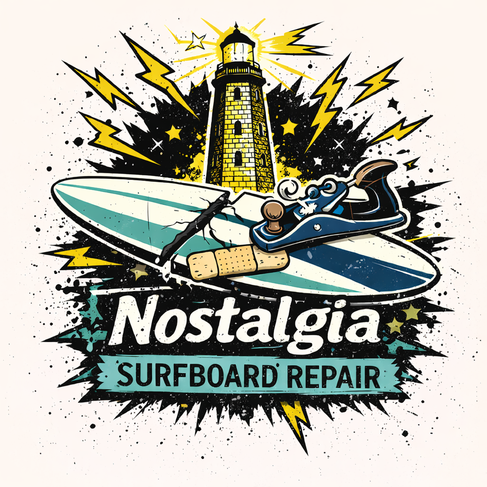
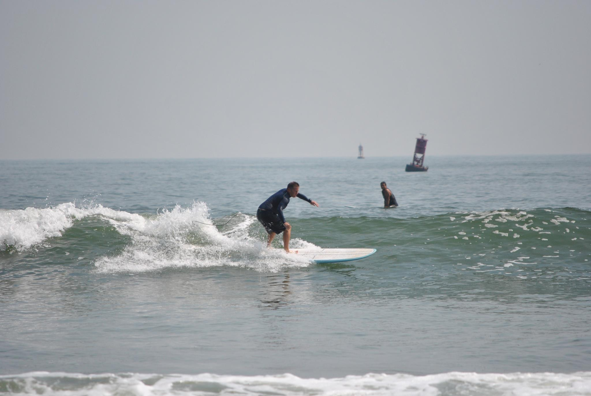
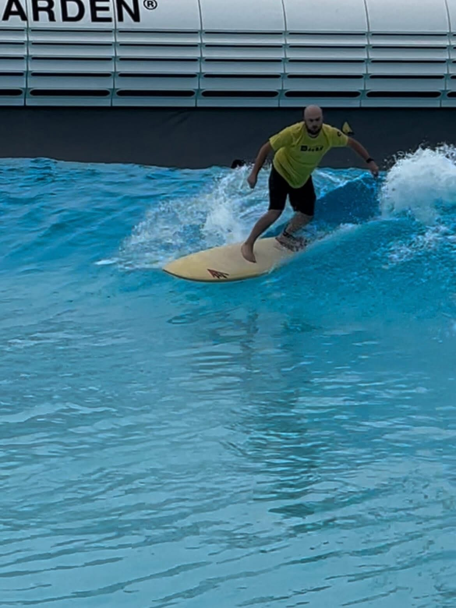

Virginia Beach, VA

Built from passion, experience, and the love of surfing
Nostalgia Surfboard & Fiberglass Repair is a family-operated, veteran-owned business rooted in Virginia Beach and built from a genuine passion for surfing and craftsmanship. What started as curiosity around resin work and surfboard construction grew into years of hands-on experience repairing and restoring boards of all kinds. Surfing isn’t just something we do—it’s part of who we are. We understand what your board goes through in real conditions, and we treat every repair with that same level of respect. Every board is handled with care, precision, and attention to detail—because we know it’s more than just equipment. It’s your time in the water. Veteran-owned and family-run, we take pride in honest work, fair pricing, and helping local surfers stay in the lineup.

Born and raised in Virginia Beach, he has spent a lifetime in and around the ocean, developing a deep understanding of local surf conditions and board performance. With over 20 years of experience in surfboard ding repair and fiberglass work, his craftsmanship is built on precision, durability, and respect for the craft. He learned repair techniques and surfboard craftsmanship from Ronnie Mellott and other underground local shapers—bringing decades of proven knowledge into every repair. Whether it’s a quick fix or a full restoration, every board is treated like his own. He is a Marine Corps Veteran and retired firefighter of over 20+ years.
Favorite Surf Spot: Doheny, CA & First Street Jetty 🌊
Favorite Board: Mickey Munoz The Glide

Raised in Virginia Beach with a strong scientific interest in surfboard manufacturing, John-Jon has developed a deep appreciation for both the craft and performance of surfboards. He learned the fundamentals of ding repair under his father and continues to build on that foundation. While serving in the Marines at Camp Pendleton, he was immersed in the surf culture of San Clemente, California—surrounded by some of the best waves and surf industry influences in the country. Constantly learning from local legends in San Clemente about how surfboards are born and fixed. While not always in the water or fixing boards, he remains closely connected to the surf community and plays a key role in supporting operations, customer communication, and the continued growth of Nostalgia Surfboard & Fiberglass Repair.
Favorite Surf Spot: Trestles, CA & Croatan Jetty 🌊
Favorite Board: Lost Round Nose Fish